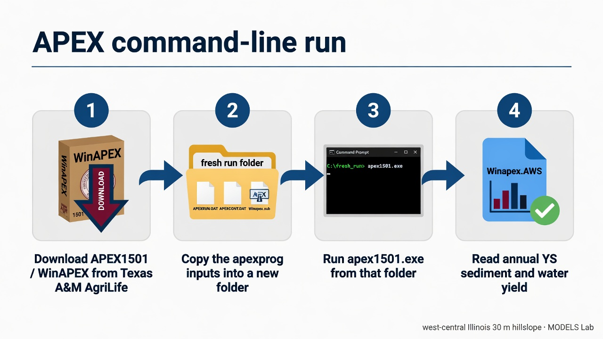
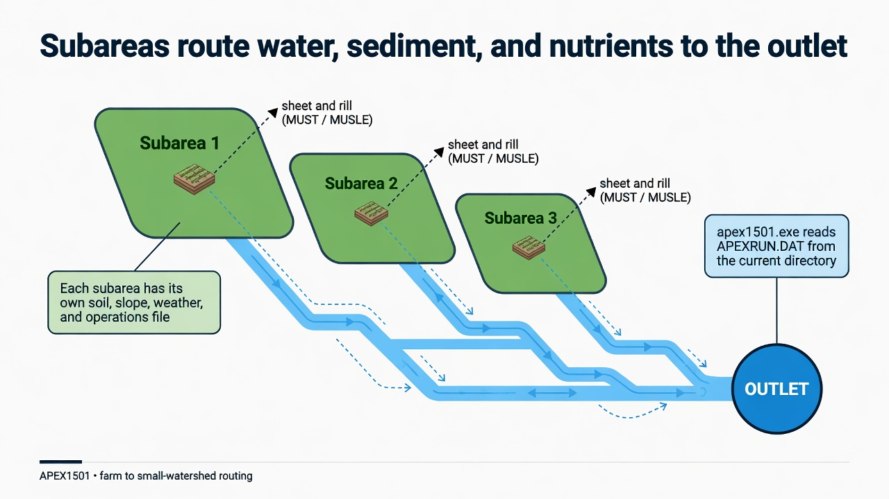
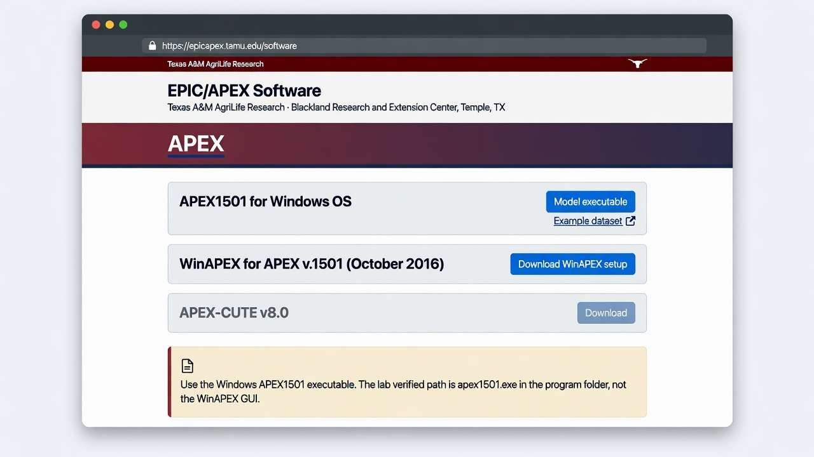

APEX
A first successful run of the Agricultural Policy/Environmental eXtender on Windows. You download APEX1501 from Texas A&M AgriLife, copy the lab’s program-folder inputs into a fresh directory, run apex1501.exe, and read the annual watershed sediment file. The WinAPEX GUI is installed; this path uses the command-line engine.

APEXRUN.DAT from the current directory.1. What this model does
APEX extends the field-scale EPIC model to a farm or small watershed. The landscape is cut into subareas. Each subarea has its own soil, slope, weather, and operations file. Water, sediment, nutrients, and pesticides move from those fields into channels and then to an outlet. The daily timestep also grows crops, applies fertilizer, and can run several erosion equations at once (USLE, MUSLE family, RUSLE, RUSLE2). You will open the annual watershed table first.

The lab’s pinned engine is apex1501.exe (APEX1501) from the WinAPEX 1501 program folder. For this example the driving erosion equation is MUST (theoretical MUSLE).
2. Get the software
Download APEX from the Texas A&M AgriLife EPIC/APEX software page. The Windows pieces you want are the APEX1501 executable and WinAPEX for APEX v.1501 (October 2016). Blackland Research and Extension Center in Temple, Texas, maintains the site. APEX-CUTE and QAPEX are later editors; you do not need them to finish this tutorial.

apex1501.exe in the program folder.On this host the extracted tree is already at C:\Grok\Models\installs\APEX (installer archive\downloads\winapex_setup.exe). If you are repeating the lab path, you can skip the download and use that folder.
3. The lab install
WinAPEX drops a GUI and a program folder. Only the program folder is required here.
| Piece | Where | First-run role |
|---|---|---|
apex1501.exe |
WinApex\apexprog\ |
The APEX1501 engine. Copy it into a working folder that already holds the .DAT files, then run it there. |
| Run control | APEXRUN.DAT, APEXCONT.DAT, APEXFILE.DAT |
Run name, number of years (20, starting 2001), and the map of soil, weather, crop, and print files. |
| Site and subarea | SITE.DAT → WINAPEX.SIT; SUBA.DAT → Winapex.sub |
west_il at 40.32 N, 91.33 W; 0.09 ha, 30 m slope length, 3% slope; soil 114; operations 2 (barley, dryland, no-till). |
| Daily weather | WDLST.DAT plus TX*.DLY |
Station list and daily files. The west-Illinois CLIGEN series is the one this example actually uses. |
WinAPEX.exe |
WinApex\ |
The Windows GUI. Useful later. Not used for the verified run. |
installs\APEX\golden holds a prior CLI tree. The verification below used a new working copy of the current apexprog inputs, so that golden tree stays untouched.
4. Novice path: run the west-Illinois hillslope
The example is a twenty-year continuous run (2001–2020) on a 30 m, 3% hillslope in west-central Illinois. Soil 114 is a fine sandy loam. Operations file 2 is barley, dryland, no-till. Mean precipitation in the output is 848.3 mm per year. You will copy the program-folder inputs into a fresh directory, drop the executable beside them, and run from that folder.
$src = "C:\Grok\Models\installs\APEX\WinApex\apexprog"
$run = "C:\Grok\Models\installs\APEX\tutorial_run_20260913"
New-Item -ItemType Directory -Force -Path $run | Out-Null
Get-ChildItem $src -File | Where-Object {
$_.Extension -notin ".OUT",".ASA",".ACY",".AWS",".SUS",".WSS",".STR",".SCX",".MDB",".SOT",".LOG"
} | Copy-Item -Destination $run
Set-Location $run
.\apex1501.exe
On this host you can instead rerun the lab wrapper, which copies those inputs, executes the engine, asserts the numbers below, and rewrites the figure:
python C:\Grok\Models\tools\run_apex_tutorial_verify.py
Stand in the folder that contains APEXRUN.DAT. The engine does not take a project path on the command line. If you run it from a tools directory, it will not see the west-Illinois inputs.

.AWS, .ASA) are written beside Winapex.OUT.5. Confirm the run
The process should exit 0 and write Winapex.OUT, Winapex.AWS, Winapex.ASA, and Winapex.SUS beside the executable. Open the annual watershed file first; each row is one year.
| Check | Where | This verification (13 Sep 2026) |
|---|---|---|
| Exit code | apex1501.exe |
0 |
Years in Winapex.AWS |
Winapex.AWS |
2001–2020 (20 rows) |
| 2001 sediment yield YS | Winapex.AWS |
0.39 t/ha |
| 2001 water yield QTW | Winapex.AWS |
32.21 mm |
| 2006 sediment yield YS | Winapex.AWS |
22.07 t/ha (wet year; 1,095 mm rain) |
| Period-mean MUST | Winapex.SUS SA# 1 |
5.89 t/ha/yr |
| Period-mean MUSL | Winapex.SUS SA# 1 |
6.73 t/ha/yr |
| Mean precipitation / water yield | Winapex.AWS |
848.3 mm/yr rain; 96.16 mm/yr QTW |
The automated test is test_tutorial_run inside tools\run_apex_tutorial_verify.py. It requires twenty AWS years, 2001 YS equal to 0.39 t/ha within 0.05, 2001 QTW equal to 32.21 mm within 0.05, 2006 YS equal to 22.07 t/ha within 0.05, and a positive SUS MUSL and MUST. That is a numeric check on a new working copy rather than the golden tree. The older tools\test_all_models.ps1 APEX block still runs in place under apexprog; use the wrapper above when you want a disposable folder.
6. This verification’s figure
The 13 Sep 2026 run wrote twenty annual rows. 2006 is the sediment peak at 22.07 t/ha; several later dry years drop YS to zero. Period-mean MUST is 5.89 t/ha/yr, which matches mean AWS YS (5.90 t/ha/yr) because MUST is the driving equation. Mean precipitation is 848.3 mm/yr; mean water yield is 96.16 mm/yr.

installs\APEX\tutorial_run_20260913. Left: annual precipitation with water yield (QTW) overlaid. Right: annual sediment yield YS, with the 2006 peak labeled.If you rerun the wrapper, this PNG is rewritten in the run folder and in each tutorial images\ home.
7. After the first success
Once the engine has written those tables, you can open Winapex.ACY for barley yield and stress, or PRINT.DAT to change which variables are stored. Changing slope length or operations is an edit to Winapex.sub and OPSC.DAT; that is a different lesson. This one stops at a verified CLI run of APEX1501.